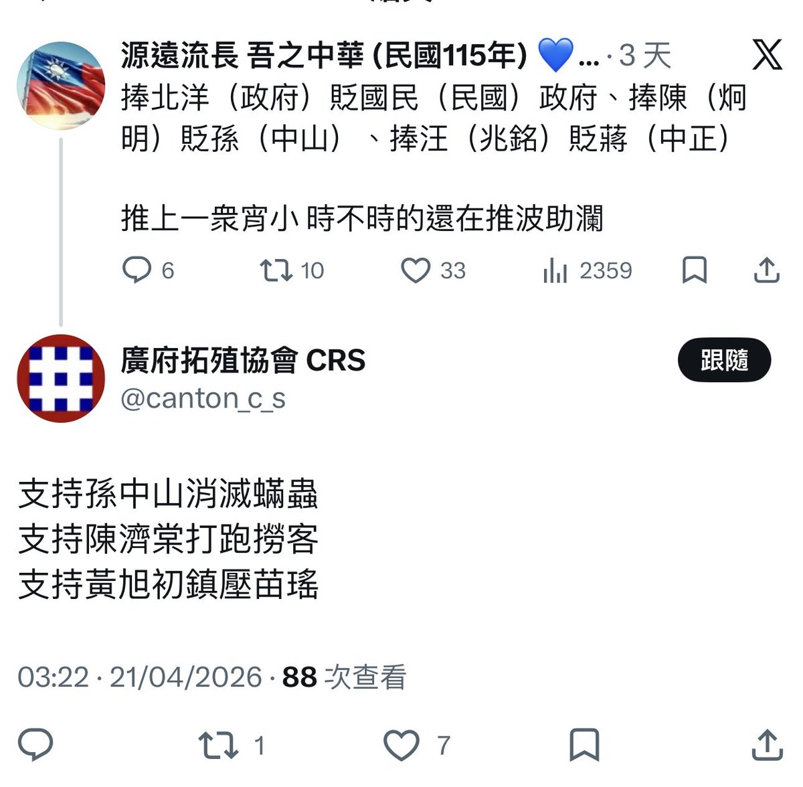

文芸🍁空白子🌸
@bungeikuhakushi
@Popping2020 @grok 反駁它

大粵惡女PoppingCandy🟩🟨🟦🇳🇿
@Popping2020
驚你刪po扮無知。
都話你條柒頭唔係好人黎㗎啦。
孫文殺我哋咁多粵人，齋西關屠城就起碼過八千，而且多為我南粵經商菁英。奪我哋粵人嘅生命財產，你居然仲支持佢？！
把口就話要令廣府強大，但實際就支持孫文呢個國賊！
你班冚家剷唔係共產黨派來有意唱反調，就真係心術不正。 https://t.co/5ts8mAw0Qz https://t.co/MoUfyldnWj